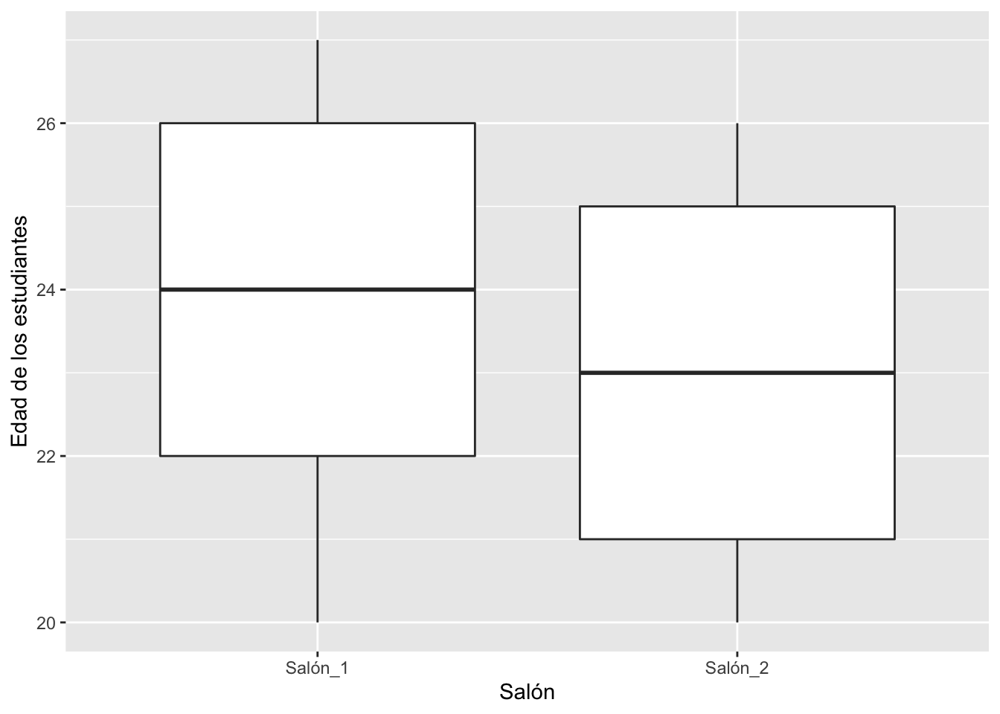
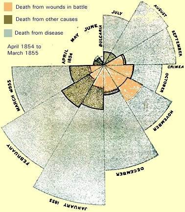

Introducción a la visualización de datos
¿Que es la visualización de datos?
La visualización de datos tiene como objetivo facilitar la apreciación de datos y determinar si existe patrones. Naturalmente, no se necesita gráficos para entender ciertas ideas. Por ejemplo si un estudiantes tiene 25 años un otro estudiante tiene 20 años. No hay que hacer un gráfico para entender que hay 5 años de diferencia entre uno y el otro. Se hace gráficos típicamente cuando hay muchos datos y entender los datos con valores numéricos o lista no es ayuda.
Por ejemplo trata de explicar cual es la diferencia (si hay) en las dos listas siguientes.
## $V1
## [1] 20 23 20 26 23 26 21 25 27 22 22 23 20 21 25 26 20 24 27 20 20 24 23 22 25
## [26] 20 24 21 20 26 21 25 24 22 25 25 22 24 27 23 20 22 27 23 20 27 21 24 25 21
## [51] 21 25 26 20 26 27 20 26 22 20 21 21 25 27 22 24 20 26 24 27 20 23 27 25 23
## [76] 24 25 26 27 21 25 20 24 24 24 25 24 21 27 24 25 20 25 27 26 21 27 21 23 23## $V1
## [1] 22 20 21 21 24 26 24 25 25 26 26 21 23 22 25 20 21 20 24 21 23 23 25 21 21
## [26] 23 26 24 23 22 21 25 26 24 25 26 21 23 20 23 24 22 23 25 26 23 24 21 22 20
## [51] 23 22 22 20 24 26 26 20 25 23 25 21 20 20 23 24 21 22 21 20 24 20 24 23 21
## [76] 22 26 21 20 26 22 20 24 21 25 22 22 22 20 20 21 22 24 26 24 26 20 21 22 21Probablemente no es evidente a primera vista cual es la diferencia entre las dos listas de datos.
Resumir la información en tablas
Una de las alternativas es resumir los datos en una tablas, por ejemplo por grupos. Se observa que hay muy poca diferencia entre los promedios de edad de los estudiantes por cada salón, pero la edad máxima de los estudiantes en los dos salones es diferente. Lo que uno observa es que las dos listas tienen valores muy similares pero el máximo valor en cada lista es diferente. Si hay muchos valores en una lista típicamente los humanos no podemos entender estos patrones. Por consecuencia es importante buscar maneras de resumir los datos en algo más conciso.
df%>%
select(V1, Salon)%>%
group_by(Salon)%>%
summarize(promedio=mean(V1),
mínimo=min(V1),
máximo=max(V1))%>%
gt()%>%
tab_header(
title = "Edad de los Estudiantes")| Edad de los Estudiantes | |||
|---|---|---|---|
| Salon | promedio | mínimo | máximo |
| Salon_1 | 23.41 | 20 | 27 |
| Salon_2 | 22.72 | 20 | 26 |
Visualizar muchos datos
Una otra alternativa es visualizar los datos con un gráfico, en este caso se uso una Boxplot (Gráfico de caja).
ggplot(df, aes(y=V1, x=Salon))+
geom_boxplot()+
ylab("Edad de los estudiantes")
Ejemplos históricos
En esta sección presento unos ejemplos históricos de representación gráficos. Esta sección no es exhaustiva y solamente para representar algunos ejemplos de gráficos y su desarrollo.
Ejemplo de la Campaña de Napoleón para invadir a Rusia
Charles Joseph Minard (1781-1870; Francia) es una de las personas que contribuyó en lo que se llama gráficas informativas (Information Graphics). El es reconocido por haber sido muy innovador en el uso de gráficos para demostrar patrones. El más famoso de este fue sobre la campaña de guerra de Napoleón para invadir a Rusia (1812-1813).
En este mapa, vemos el movimiento de la campaña de Napoleón para invadir a Rusia. El movimiento representa la cantidad de hombres que comenzaron el camino hacia Rusia (la linea con color marón) hasta Moscú, el viaje de regreso el color negro. El ancho de la barra representa la cantidad de hombres presente en el ejercicio militar. Cuando comenzaron (saliendo de Paris) eran más de 422,000 soldados, al llegar a Moscú ya era solamente 100,000 soldados. Cuando finalmente, al regresar a Paris, después de invadir a Rusia, Napoleón tenia solamente 10,000 soldados con él..
Nota el gráfico debajo, este representa la temperatura de regreso de Moscú, y miran como al bajar la temperatura más y más los soldados murieron. La mortandad en gran parte fue por no estar preparado para el frío. La escala de temperatura no era el de Celcius ni de Farenheit, pero una escala que se llama Réaumus, donde el punto de congelación y hirviendo es de 0° y 80° respectivamente. Esta escala se uso en multiples paises de Europa hasta medio del siglo 19.

Donde proviene la carne que consumen la gente de Paris
Un otro ejemplo de Minard es la siguiente gráfico que representa donde proviene la carne que la gente en Paris comen. El color negro representa carne vaca, el color el color verde es la ternera y el color rojo es el cordero. El uso “Pie Charts” para identificar la proporción de cada grupo y el tamaño del “Pie Chart” para identificar la cantidad relativa con los otros departamentos (Organización política local).
Gráfico Combcox
La guerra de Crimea (1853-1856) fue una de las primeras guerras donde se comenzó a contabilizar la causa de muerte de los soldados. Esta guerra tenia como conflicto entre Rusia y sus aliados por el otro lado el Emperio Otaman, Francia, Reino Unido y Sardania (ahora parte de Italia). El objetivo al principio era sobre el acceso a las tierras Santas en Palestina por los cristianos. Lo que es interesante de esta guerra con relación la historía de la evolución de los gráficos es el impacto que tuvo una enfermera de los Reinos Unidos que se llama Florence Nightingale (1820_1910). Era no solamente una persona que tuvo impacto sobre el desarrollo de como se hace la ciencia de “Enfermería” pero tuvo impacto en como visualizar las causas principales de las mortandad durante una guerra. Aquí una ilustración de ella.

Como enfermera en las campos militares, ella se percato que la gran mayoría de los soldados mueren no por la guerra pero por la poca calidad de condición de salud en los campos de guerra. Para tratar de impactar los políticos para que aportan más a la condiciones de los soldados ella recolecto datos y produjo unos gráfico para describir la causa de mortandad en Crimea. Uno de estos que tuvo un impacto es sobre es el siguiente gráfico.
Lo que ella demuestra en este gráfico es cual son las causas de mortandad de los soldados en diferentes meses del año. El color gris, represente la cantidad de soldados muertos por enfermedades (no por estar batallas), el color verde, representa los soldados que murieron por otras razón no por estar en batalla no por enfermedades, y el color amarillo son los que murieron por estas en batallas. Es claro que la causa principal de mortandad no es el campo de batalla, pero por enfermedades no relacionados al campo de batalla. Como resultado de este gráfico se hizo unos cambios en las condiciones de los soldados reduciendo la mortandad.
